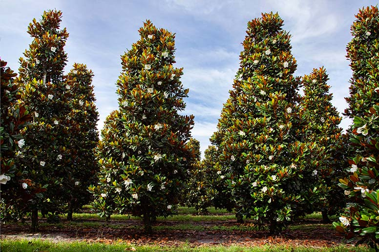

Maple

The #1 Tree Page.
|
||||||||||||||||||||
Facts: Maple trees are known for their distinctive leaves and colorful fall foliage. Common use: Maple syrup and ornamental landscaping.

Facts: Coconut palms produce coconuts that contain coconut water and edible meat. Common use: Food, cooking oil, drinks, and cosmetics

Facts: Magnolia trees are known for their large, fragrant flowers. Common use: Ornamental landscaping and gardens